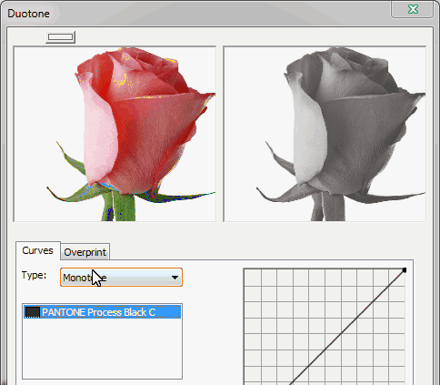
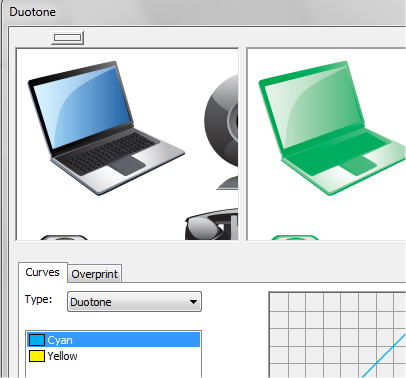
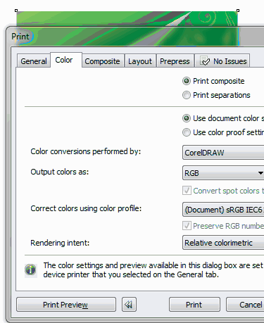

Изготавление многоцветного трафарета, помогите
artclon / 03.06.2010, 23:43/00:41
Форум:
Добрый день!
Хочу сделать многоцветрый трафарет. Но не могу решить первую задачу - автоматически уменьшить количество цветов в рисунке. Хочу изготовить 4-ех цветный трафарет из полноцветной фотографии. (т.е. преобразовать n-ое количество цветов в 4 цвета). Помогите...
попробуй преобразовать в Duotone, и выбери нужные цвета.
либо я не умею пользоваться этой функцией duotone//kb,j там нельзя выбрать нужные мне цвета предлагаются только стандартные
не умеете

спасибо огромное за урок,но мне нужно получить две картинки разных цветов ,чтобы при наложении друг на друга мы получали изображение полное. Это используется при производстве пакетов..
Я не телепат, сразу нужно объяснять что требуется сделать.
А что вам мешает сделать дуотон и задать два нужных цвета?
Если нужно будет печатать по отдельности, печатайте поканально.
но насколько я поняла это получаются одинаковые изображения ,просто окрашенные в разные тона,а мне нужно чтобы изображения дополняли друг друга...,чтобы можно было наложить их друг на друга и допустим ,если я использую желтый и синий цвет при наложении я получаю зеленый..вот..
Ну и что... разве не оно?

При производстве пакетов методом шелкографии применяют растеризацию изображения. Используют соответствующую линиатуру и угол растеризации. Тогда при совмещении однотоновых изображений вы получите одно целое полноцветное.
а можете подробнее рассказать как это делать? пожалуйста ,очень нужно.
Sancho может и так...но как мне получить те два изображения по отдельности ?
biswom, если только для печати, то просто печатать по отдельности:

Страницы